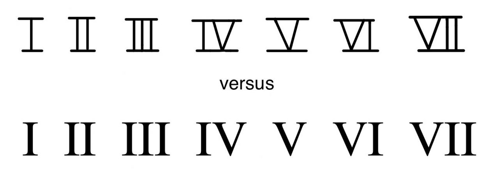

Open Music Theory：繁體中文版
羅馬數字
| 音階級數 | 大寫羅馬數字 | 小寫羅馬數字 |
|---|---|---|
| 1 | I | i |
| 2 | II | ii |
| 3 | III | iii |
| 4 | IV | iv |
| 5 | V | v |
| 6 | VI | vi |
| 7 | VII | vii |
譜例 1。音階級數與羅馬數字。

- versus：兩者對照；
- 上排是手寫大寫羅馬數字，下排是打字形式。
查看英文原文
Key Takeaways
- Roman numeral analysis is a system of chord labels that contextualize a chord in relation to the overall key of a piece.
- The number represented in the Roman numeral corresponds to the scale degree of the chord's root.
- If the chord has a seventh, a superscript seven (7) is added to the Roman numeral.
- The quality of a chord is also indicated in Roman numeral analysis:
- Chords with a major third above the root (major, augmented) uses a capital Roman numeral.
- Chords with a minor third above the root (minor, diminished, half-diminished) use a lowercase Roman numeral.
- Special symbols are added for augmented (+), diminished (o), and half-diminished (ø) chords.
Musicians use Roman numerals to identify chords within the context of key signatures. Roman numerals identify the scale degree of the chord's root (Example 1). Because Roman numerals are based on scale degrees rather than specific pitch names, they are useful for understanding how harmonies function similarly in different keys.
| Scale degree | Uppercase Roman Numeral | Lowercase Roman Numeral |
|---|---|---|
| 1 | I | i |
| 2 | II | ii |
| 3 | III | iii |
| 4 | IV | iv |
| 5 | V | v |
| 6 | VI | vi |
| 7 | VII | vii |
Example 1. Scale degrees and Roman numerals.
To type uppercase Roman numerals, use the uppercase Latin alphabet letters “I” and “V”; likewise, for lowercase Roman numerals, type the lowercase “i” and “v.”[1] Handwritten uppercase Roman numerals have horizontal bars across the top and bottom of the numeral, in order to further distinguish between uppercase and lowercase (Example 2). There is no such difference with lowercase Roman numerals.
羅馬數字除了表示根音，也能標示和弦性質（譜例 3）。[2]大寫表示大三和弦，小寫表示小三和弦。例如，在大調中，以第一級 [latex]\hat1[/latex]（do）為根音的和弦寫作「I」；以第二級 [latex]\hat2[/latex]（re）為根音的和弦，則寫作小寫「ii」，依此類推。小寫羅馬數字後加上標「o」，例如 viio，表示減三和弦；大寫後加「+」，例如 V+，表示增三和弦。
| 三和弦性質 | 羅馬數字寫法 | 範例 |
|---|---|---|
| 大 | 大寫 | V |
| 小 | 小寫 | ii |
| 增 | 大寫加 + | V+ |
| 減 | 小寫加 o | viio |
譜例 3。以羅馬數字表示三和弦性質。
譜例 4。G 大調與 G 小調三和弦的羅馬數字。
〈三和弦〉已介紹：小調若升高第七級，形成導音，和弦性質與羅馬數字也會改變。小三和弦 v 變成大三和弦 V，下主音上的 VII 變成減三和弦 viio。因此，小調的羅馬數字有時隱含升高第七級；看到 V 或 viio 時，記得使用升高後的導音。
查看英文原文
Roman Numerals and Quality
In addition to showing the chord root, Roman numerals may indicate quality of the chord (Example 3).[2] Uppercase Roman numerals denote major triads, and lowercase Roman numerals denote minor triads. For example, in a major key, a chord built on the first scale degree, [latex]\hat1[/latex] or do, is identified as “I,” a chord built on the second scale degree, [latex]\hat2[/latex] or re, is identified by the lowercase Roman numeral “ii,” and so on. Lowercase Roman numerals followed by a superscript "o" (such as viio) represent diminished triads. Uppercase Roman numerals followed by a + sign (such as V+) represent augmented triads.
| Triad quality | Roman numeral characteristics | Example |
|---|---|---|
| major | uppercase | V |
| minor | lowercase | ii |
| augmented | uppercase with + | V+ |
| diminished | lowercase with o | viio |
Example 3. Showing triad quality with Roman numerals.
Just as scale degrees and solfège are the same across keys, so are Roman numerals. Example 4 shows the Roman numerals for the diatonic triads of G major and G minor as an example, but the same Roman numerals would be used regardless of which pitch is the tonic. The solfège and scale degree of the roots are also labeled—note the correspondence between these and the Roman numerals.
Example 4. Roman numerals of triads in G major and G minor.
As discussed in Triads, if the leading tone is raised in minor, the chord quality changes, and thus the Roman numeral changes: the minor v chord becomes a major V chord, and the subtonic VII chord becomes a diminished viio chord. This means that a Roman numeral in minor sometimes implies a raised leading tone, so remember that when you see a V or a viio in a minor key, you will be using the raised leading tone.
七和弦的羅馬數字加上標 7，例如 V7、ii7、viio7。大小寫依性質決定：大七和弦與屬七和弦用大寫，小七、減七與半減七和弦用小寫。還要加上特殊符號區分半減與全減：∅ 表示半減七和弦，o 表示全減七和弦。譜例 5整理了這些寫法。
| 七和弦性質 | 羅馬數字寫法 | 範例 |
|---|---|---|
| 大大七和弦 （大七和弦） | 大寫 | IV7 |
| 大小七和弦 （屬七和弦） | 大寫 | V7 |
| 小小七和弦 （小七和弦） | 小寫 | ii7 |
| 半減七和弦 | 小寫加 ∅ | ii∅7 |
| 全減七和弦 （減七和弦） | 小寫加 o | viio7 |
譜例 5。以羅馬數字表示七和弦性質。
譜例 6。大調與小調七和弦的羅馬數字。
查看英文原文
Roman Numerals for Seventh Chords
Roman numeral labels for seventh chords add a superscript 7 (for example, V7, ii7, and viio7). Whether or not the Roman numeral is capitalized depends on the quality: major and dominant seventh chords are capital; minor, diminished, and half-diminished seventh chords are lowercase. You will need to add special symbols to indicate half and fully diminished chord qualities: ∅ indicates a half-diminished seventh chord and o indicates a fully diminished seventh chord. This is summarized in Example 5.
| Seventh chord quality | Roman numeral characteristics | Example |
|---|---|---|
| Major-major seventh chord (Major seventh chord) |
uppercase | IV7 |
| Major-minor seventh chord (Dominant seventh chord) |
uppercase | V7 |
| Minor-minor seventh chord (Minor seventh chord) |
lowercase | ii7 |
| Half-diminished seventh chord | lowercase with ∅ | ii∅7 |
| Fully diminished seventh chord (Diminished seventh chord) |
lowercase with o | viio7 |
Example 5. Showing seventh chord quality with Roman numerals.
Note that major seventh and dominant seventh chords Roman numerals have the same features: a capital Roman numeral followed by a superscript 7. One should infer whether the chord is major or dominant through the key context. Dominant seventh chords are only found on V7 chords (or VII7 in minor); otherwise, assume that a capital Roman numeral with a 7 is a major seventh chord.
Example 6 shows the seventh chords of the G major and G minor scales, labeled with chord symbols and Roman numerals (in blue). Again, the Roman numerals would be the same for any transposition of these keys.
Example 6. Roman numerals of seventh chords in major and minor keys.
進行羅馬數字分析，首先要辨識作品的調性，並在作品或片段開頭標明。和和弦符號一樣，單獨的大寫音名表示大調，後加「mi」表示小調，例如 B♭mi 表示 B♭ 小調。另一種常見寫法是用小寫音名表示小調，例如 b♭ 表示 B♭ 小調。
羅馬數字依和弦根音的音階級數決定，因此下一步是找出根音。和弦可能已轉位，根音不一定在低音；若譜上不是原位，可以重新疊成原位，最好在心中完成。
羅馬數字的大小寫依和弦性質決定。由於調內各和弦的性質模式固定，可以記住大小調中的和弦性質，據此決定大小寫及是否需要特殊符號。
辨識和聲羅馬數字的步驟如下：
- 辨識調性，別忘了名稱中需要的升、降記號。
- 找出和弦根音及其音階級數，決定羅馬數字。
- 依和弦性質使用大寫或小寫，必要時加特殊符號。
譜例 7分析路易絲・賴夏特（Louise Reichardt，1779–1826）的〈Die Wiese〉（草地，1811）。德文歌詞意譯如下：
「春日的一天，一切都美麗而歡快，我曾來到一間僻靜的夏日小屋，一位甜美的女孩從屋裡走出，哭泣著。」
請留意這份分析的幾個特點：
譜例 7。路易絲・賴夏特〈Die Wiese〉（1811）的羅馬數字分析。
譜例 8是另一個羅馬數字分析例子。括號中的音是裝飾性和弦外音，不屬於和聲。
譜例 8。Tommaso Giordani〈Caro mio ben〉（親愛的你，1785）的羅馬數字分析。
音高以外的節奏、音色、發音方式、力度等，通常很少影響和弦的羅馬數字標記。因此，完整的音樂分析不能只看羅馬數字呈現的和聲。羅馬數字能描述某些音樂現象，卻無法說明音樂的全部。
- Cohn, Richard 等。2001。〈Harmony〉（和聲）。Grove Music Online。https://doi.org/10.1093/gmo/9781561592630.article.50818。
- Drabkin, William。2001。〈Inversion〉（轉位）。Grove Music Online。https://doi.org/10.1093/gmo/9781561592630.article.13879。
- McGrain, Mark。1986。Music Notation（音樂記譜法）。波士頓：Berklee Press。
- Roemer, Clinton。1985。The Art of Music Copying: The Preparation of Music for Performance（抄譜的藝術：為演出準備樂譜），第 2 版。Sherman Oaks：Roerick Music Company。
媒體出處與授權
- 〈手寫與打字的羅馬數字〉© Megan Lavengood，採用 CC BY-SA（姓名標示—相同方式分享）授權。
查看英文原文
Roman Numeral Analysis
To complete a Roman numeral analysis, you must first identify the work’s key. A Roman numeral analysis should indicate the key at the beginning of the work or excerpt. As with chord symbols, a capital note name alone indicates major keys, and "mi" would follow to indicate a minor key (e.g., "B♭mi" for B♭ minor). Another common practice is to use lowercase letters for minor keys (e.g., "b♭" for B♭ minor).
Roman numerals are assigned according to the scale degree of each chord's root, so next, the root must be identified. A chord may be inverted, so the root is not necessarily in the bass. You can re-stack the chord in root position (preferably mentally) if it does not appear that way in the music.
The Roman numeral will be capital or lowercase depending on the chord quality. Because each chord in a key will always have the same quality, you can memorize the qualities of chords within major and minor keys to determine whether the Roman numeral should be capital or lowercase, and whether it needs added special symbols.
To summarize, these are the steps for identifying the Roman numeral of a harmony:
- Identify the key (don't forget any sharp or flat signs if applicable!).
- Find the root of the chord and note its scale degree. This corresponds to the Roman numeral of the chord.
- Write the Roman numeral, using upper- or lowercase letters and special symbols (if applicable) to show the chord quality.
Example 7 shows a Roman numeral analysis of "Die Wiese" (1811) by Louise Reichardt (1779–1826). The German text translates as follows:
"One spring day, when everything was beautiful and cheerful, I once came to a lonely summer house where a sweet girl came out and cried."
Note several features of this analysis:
- The key is labeled at the start of the analysis. Roman numerals are written underneath the staff.
- Roman numerals do not need to be repeated if the chord is not changing.
- Because this piece is in minor, it sometimes uses a raised leading tone (G♯ in A minor), producing major V and dominant V7 chords.
- The unraised G♮ subtonic scale degree produces a dominant seventh chord built on the unraised [latex]\hat7[/latex].[3]
- The A in the vocal part of m. 4 is an embellishing tone—not part of the VII7 harmony and does not affect the Roman numeral.
- This is still a V7 even though the fifth of the chord is missing.
- Inversion does not change the Roman numeral of a chord. Your instructor will tell you if they want you to indicate inversions with figures. See Figured Bass for more information on this topic.
Example 7. Roman numeral analysis of "Die Wiese" by Louise Reichardt (1811).
Example 8 shows another Roman numeral analysis example. Notes in parentheses are embellishing tones (not part of the harmony).
Example 8. Roman numeral analysis of "Caro mio ben" by Tommaso Giordani (1785).
As seen in Examples 7 and 8, several aspects of pitch do not affect the Roman numeral that is assigned to a chord, such as:
- Chord voicing, which includes the octave of the notes, doubling of notes, or even the omission of certain notes (especially the chordal fifth).
- Inversion/bass note. Inversion can be shown with figures, as described in the Figured Bass chapter, but the Roman numeral does not change.
- Embellishing tones. Not every note in a piece is necessarily considered part of the harmony—sometimes notes are better understood as embellishing tones (which you can learn more about in the Embellishing Tones chapter). Embellishing tones may occasionally be indicated with figures, but they do not affect a Roman numeral.
Aspects of music outside of pitch—rhythm, timbre, articulation, dynamic, and so on—rarely impact the Roman numeral label of a chord. Because of this, a complete analysis of a piece of music ought to consider more than just the harmonies as understood with Roman numerals. Roman numerals are a helpful tool for describing certain musical phenomena, but they do not tell the whole story.
- Cohn, Richard, et al. 2001. “Harmony.” Grove Music Online. https://doi.org/10.1093/gmo/9781561592630.article.50818.
- Drabkin, William. 2001. "Inversion." Grove Music Online. https://doi.org/10.1093/gmo/9781561592630.article.13879.
- McGrain, Mark. 1986. Music Notation. Boston: Berklee Press.
- Roemer, Clinton. 1985. The Art of Music Copying: The Preparation of Music for Performance, 2nd edition. Sherman Oaks: Roerick Music Company.
- Roman Numeral Analysis: Triads (musictheory.net)
- Harmonizing Scales & Roman Numeral Analysis (Kaitlan Bove)
- Roman Numerals (learnmusictheory.net)
- Roman Numeral Analysis (8notes.com)
- Roman Numeral Chord Symbols (Robert Hutchinson)
- Roman Numerals in Major Flashcards (gmajormusictheory.org)
- Roman Numerals in Minor Flashcards (gmajormusictheory.org)
- Inversion & Roman Numerals in Major Flashcards (gmajormusictheory.org)
- Inversion & Roman Numerals in Minor Flashcards (gmajormusictheory.org)
- How the Roman Numeral System Works (YouTube)
- Roman Numeral Identification, pp. 15–16, 18 (.pdf), pp. 5–7 (.pdf)
- Roman Numeral Identification and Construction, p. 14 (triads) and 17 (seventh chords) (.pdf), p. 8 (.pdf), (website, website)
- Roman Numeral Construction, p. 22 (.pdf)
- Roman Numerals Identification A (.pdf, .mscz, .mp3). Asks students to create a Roman numeral analysis of a modified Bach chorale.
- Roman Numerals Identification B (.pdf, .mscz, .mp3). Asks students to create a Roman numeral analysis of a modified Bach chorale.
- Roman Numerals Identification C (.pdf, .mscz, .mp3). Asks students to create a Roman numeral analysis of a modified Bach chorale.
- Roman Numerals (.pdf, .mscz). Asks students to identify chord symbols and Roman numerals for open-voicing chords in major and minor keys, realize Roman numerals in closed position, and label the chords of two excerpts with Roman numerals.
Media Attributions
- Handwritten Versus Typed Roman numerals © Megan Lavengood is licensed under a CC BY-SA (Attribution ShareAlike) license
- The Roman numerals IV (4) and VI (6) are often confused. To remember the difference, think of IV (4) as V minus I (5 − 1 = 4), and VI (6) as V plus I (5 + 1 = 6). ↵
- Some music theorists (especially outside North America) prefer to use only uppercase Roman numerals, a system which assumes chord quality is intuited. ↵
- Another analysis for the VII chord, especially VII7, is as an applied chord in the key of III (V/III). Read more about tonicization and applied chords in Tonicization. ↵